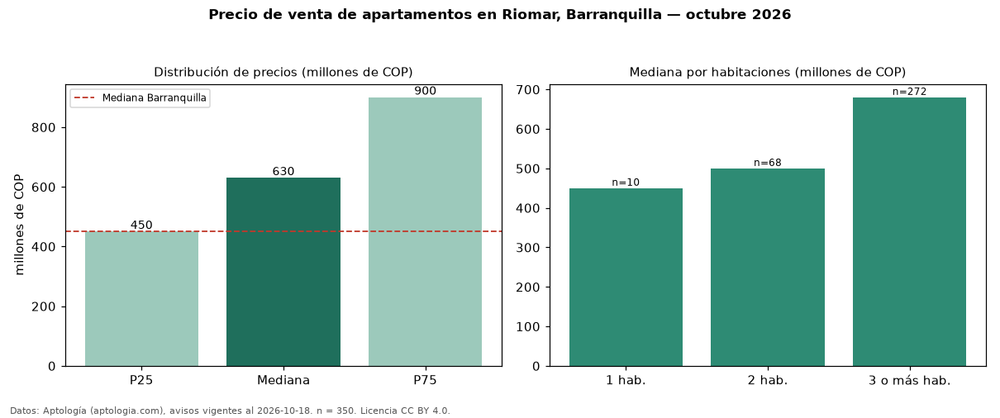

Precio de venta de apartamentos en Riomar, Barranquilla — octubre 2026
En Riomar, Barranquilla, la mediana de precio de venta de apartamentos es COP 630 millones, según 350 avisos vigentes. Frente a la mediana de Barranquilla para apartamentos (COP 450 millones), queda 40 % por encima. Por metro cuadrado, la mediana es COP 5,10 millones/m² (n = 340 avisos con área), 13 % por encima de Barranquilla (COP 4,53 millones/m²). Con el precio por m² de arriendo del mismo segmento (COP 40.952/m² al mes), la rentabilidad bruta implícita es 9,6 % anual (aproximación con medianas de ofertas distintas). El área mediana anunciada es 130 m². El segmento con más oferta es el de 3 o más habitaciones (272 avisos, mediana COP 680 millones); pasar de 1 habitación a 3 o más habitaciones cambia la mediana +51 %. La administración mediana declarada es COP 683.500 al mes (n = 268). La mitad central de los avisos va de COP 450 millones a COP 900 millones (razón 2,0), una dispersión alta. Datos: Aptología (aptologia.com), CC BY 4.0 — https://www.aptologia.com/venta/barranquilla/riomar. Archivos: PDF, CSV con las cifras y gráfica PNG.

| Avisos únicos | 350 |
|---|---|
| Percentil 25 | COP 450.000.000 |
| Mediana | COP 630.000.000 |
| Percentil 75 | COP 900.000.000 |
| Mediana por m² | COP 5.103.986 |
Fuente: avisos vigentes de portales inmobiliarios recopilados por Aptología, deduplicados (mínimo 30 avisos únicos por celda). Precios pedidos, no cerrados. Fecha: 2026-10-18.